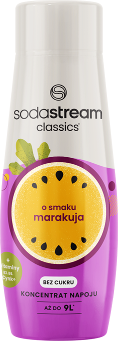

Syrop

SODASTREAM
SYROP Marakuja,
440 ML
TROPIKALNA EKSPLOZJA SMAKU
Marzysz o egzotycznej podróży bez wychodzenia z domu? Z
syropem SodaStream o smaku marakui to proste! Wystarczy saturator
do gazowania wody SodaStream, zimna woda i kilka chwil, by
stworzyć idealnie odświeżający napój.
Jedna SODASTREAM - Wiele możliwości

Egzotyczny smak marakui
w twoim domu
Szukasz orzeźwienia z nutą tropików? Nie czekaj, wypróbuj syrop
marakuja
i z jego pomocą stwórz przepyszne napoje gazowane
o egzotycznym smaku. Zasmakuj się w połączeniu słodkiej marakui
i orzeźwiających bąbelków,
i zaskocz swoich gości.

gazuj
miksuj

smakuj


Egzotyczny smak i wsparcie każdego dnia*
Czas na tropikalne orzeźwienie! Niacyna, czyli witamina B3 zawarta w syropie SodaStream o smaku Marakui pomaga w redukcji zmęczenia.
witamina B6Syrop SodaStream o smaku Marakui został wzbogacony dodatkiem cynku, który wspiera prawidłowe funkcjonowanie układu odpornościowego. To owocowa słodycz i wsparcie dla organizmu!
Zadbaj o siebie z SodaStream! Syrop Marakuja został wzbogacony o witaminę B6, która wspiera prawidłowe funkcjonowanie układu nerwowego. To chwila przyjemności i coś ekstra dla Ciebie!
Zadbaj o siebie z SodaStream! Syrop Marakuja został wzbogacony o witaminę B6, która wspiera prawidłowe funkcjonowanie układu nerwowego. To chwila przyjemności i coś ekstra dla Ciebie!
Syrop SodaStream o smaku Marakui został wzbogacony dodatkiem cynku, który wspiera prawidłowe funkcjonowanie układu odpornościowego. To owocowa słodycz i wsparcie dla organizmu!
Stwórz swój własny koktajl

SodaStream to nie tylko sposób na orzeźwiający napój marakuja! Baw się
smakiem i twórz autorskie koktajle! Do bąbelków i syropu
dodaj swoje ulubione dodatki:
Owoce: Kawałki świeżego lub mrożonego mango, ananasa, truskawek, kiwi,
limonki, cytryny, pomarańczy wzbogacą smak i dodadzą witamin.
Zioła: Mięta, bazylia, melisa, rozmaryn – nadadzą koktajlowi
aromatycznej świeżości.
Przyprawy: Imbir, cynamon, kardamon – dla pikantnego akcentu.
Eksperymentuj, mieszaj smaki i odkrywaj nowe koktajlowe
kompozycje.
Jedna sodastream - Wiele możliwości
Wybieraj spośród naszej szerokiej gamy syropów SodaStream. Postaw na klasyczne smaki, takie jak 7up, Mirinda lub Pepsi. Spróbuj także naszych autorskich kompozycji SodaStream – czekają na Ciebie pyszne Owoce Leśne, aromatyczny Kwiat Czarnego Bzu, pobudzający zmysły Różowy Grapefruit lub tropikalny smak Pomarańczy z Mango.